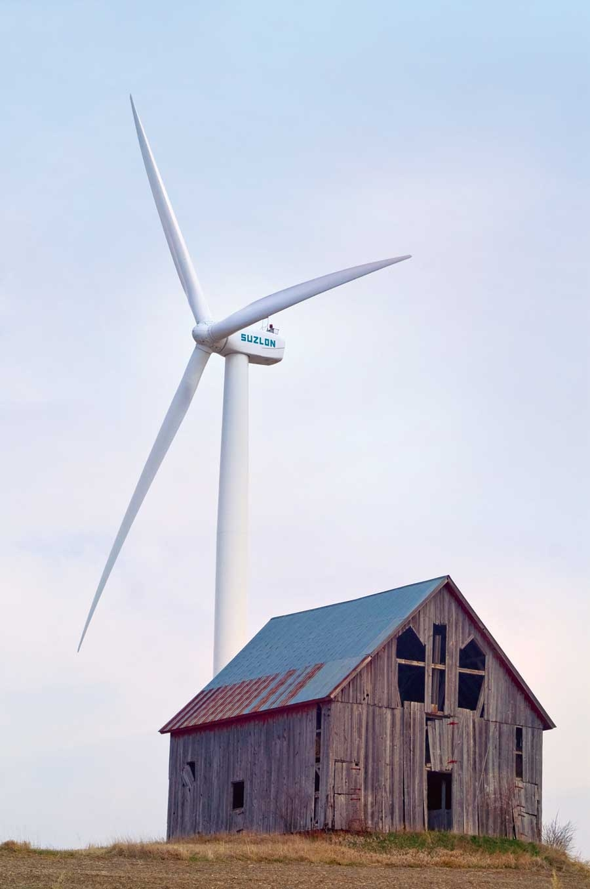

If necessity is the mother of invention, then these are fertile times for renewable energy sources. Wildly fluctuating fuel prices, expensive wars in oil-producing regions, and the growing threat of global warming are all pushing the nation to explore new sources of power. While wind is one of the more promising renewable energy options, it requires the development of expensive infrastructure.
The tiny town of Rock Port, Mo., provides an interesting model for overcoming this financial barrier, landing it a spot on our list of 11 Great Places You’ve (Maybe) Never Heard Of list. Located in the northwest corner of the state, not far from the Nebraska border, Rock Port, population 1,300, is in many ways a typical small, meat-and-potatoes Midwestern town. But it’s also situated in line with some of the nation’s best wind resources - a valuable asset that is being developed by John Deere as part of a recent expansion into the wind turbine market.
When John Deere announced plans to build a wind farm near Rock Port, local entrepreneurs and town leaders joined forces with them to create the private company Wind Capital Group, and installed four wind power generators that provide an equivalent of about 125 percent of the town’s power needs, according to Rock Port mayor Jeffrey Seaman. The community remains tied to the grid to provide a constant source of power even when there’s no wind. The turbines aren’t owned by the city, but by Wind Capital Group, which sells any excess wind power not used by the city on the open market. Still, the city and its residents see significant financial savings due to the lack of wheeling charges, which are fees for energy lost during transmission down the power lines. Because Rock Port is so near its power source, little energy is lost, which adds up to an average of $60,000 a year in savings for the city, according to Seaman.
Population: 1,395
Median Household Income: $28,571
Weather: Windy with hot summers and winters that can be cold. Annual snowfall is 25 inches.
What Makes It Great: An inventive private-public partnership makes it the first town to be fully powered by wind energy.
|
 MARK PUTMAN Old and new: Rock Port embraces a renewable future with 100 percent wind power. |
|
|